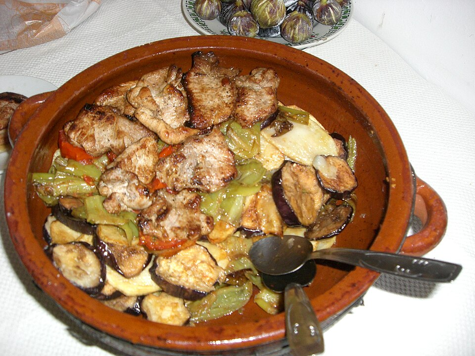

De l’horta · Plat de verdures
Tumbet mallorquí
Patates, albergínies i pebres sota una capa de salsa de tomàtiga. Tot el sabor de l’horta, dins una greixonera.
4
personesVeure recepta
Un petit receptari de l’illa
Hi ha sabors que ens fan tornar a casa. Descobreix dues receptes de Mallorca i gaudeix de preparar-les, passa a passa.
Entra al receptariIngredients senzills. Receptes per compartir.

El nostre receptari
De l’horta · Plat de verdures
Patates, albergínies i pebres sota una capa de salsa de tomàtiga. Tot el sabor de l’horta, dins una greixonera.
Del forn · Postres i berenars
Ametlla mòlta, ous i un toc de llimona. Un pastís tendre per acabar el dinar o compartir un berenar.
Cuinar també és recordar
La cuina mallorquina forma part dels dinars en família, dels berenars i de les trobades amb amics. Es transmet entre fogons, amb petits gestos i maneres de fer que cada casa fa seves.
Aquí començam amb un plat salat i unes postres: el tumbet i el gató d’ametlla. Dues elaboracions per descobrir sense presses.
Coneix les fonts del projecte